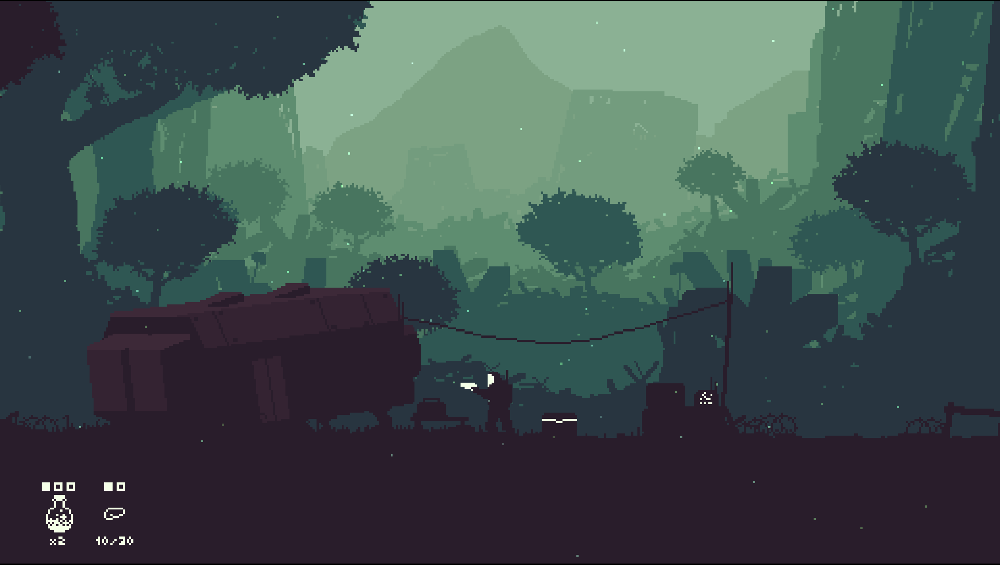
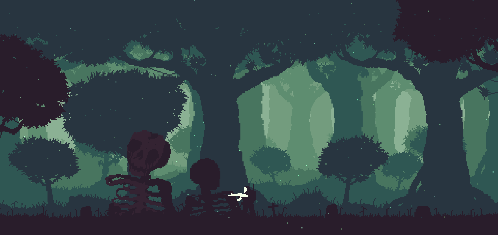
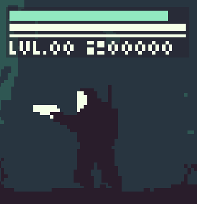
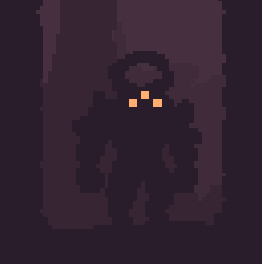
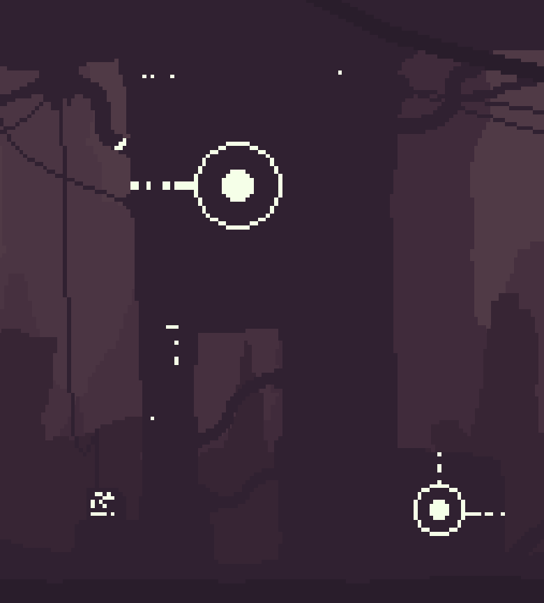

For my game analysis assignment I chose a game called Return. Return is an art driven adventure game currently in development by Dead Unicorn and Jabbu.
Title Card
Return follows an unnamed player character, whom I will refer to as the survivor, and their exploration of their post-apocalyptic home world. The story is that the planet’s ecosystem was dying, natural resources were scarce, and war broke out amongst the population. The survivor saved up enough money to purchase a ship and leave the planet. The survivor sets the ship on autopilot and goes into cryo-sleep. When they wake up, they discover that the ship encountered an error during flight and returned to the plane for repairs. However, dozens of years later, the events that occurred on the planet have mutated it beyond recognition. The survivor’s objective is to explore the landscape and scavenge parts to repair their ship.

Base Camp
The game starts you out at your Basecamp which has an ammo box and a console. The console serves as a fast travel point between it and future areas. Objective wise, there really isn’t any other objectives to follow. The main driving force behind the game for me was the unknown. The game want’s you to explore and it’s visuals support that. The visuals are both simplistic and beautiful. Foreground objects are pretty simple in look and animation while the backgrounds really draw your attention. The sound design is very supportive of the environments. Much of it is ambience with birds chirping and various nature noises. This combined with a low mysterious hum really adds to the experience.

Graveyard
Return’s gameplay is very simple in my opinion. The game starts you out with a pistol and a sword as your weapons and a few health potions. The survivor has a stamina bar as well which drains whenever you swing your sword or roll to dodge an attack. Enemies are also very simple with all but one of the enemies I encountered having only the ability to melee. Combat is as simple as roll to dodge an attack and counterattack with your sword or gun. Exploration is also simple. Areas are connected at the ends of the screen and sometimes need items to access. These Items can be found by killing a certain enemy or finding them on an interactable. However, the game doesn’t just tell you where to go. Most of my exploration was walking through an area to the next while occasionally fighting an enemy or finding an item to get me to a future area.

Survivor

Cave Golem

Caves Console
With the game still being in development some flaws are expected of course. My biggest complaint is the lack of a save function. If I close out of the game I have to start the whole game over next time I open it. Other than that I don’t have many other complaints besides the game feeling janky at times. I don’t think this game is for everyone though. The main draw from this game is it’s visuals. It doesn’t have much in terms of gameplay and tells you just enough about the story to get you started. Return tells a story through it’s visuals and it’s interactions. Despite that I still recommend the game if you like visuals or like uncovering past events by playing the game.
Console Log Entry
For my kumu network I wanted to build a map of the game. The main elements in green are areas with arrows pointing to the next area. The blue circle is the player character and the red triangles are enemies which are connected to the areas the appear in. This is the same for interactables which are the purple pentagons. The yellow diamond represents an NPC that isn’t hostile. I haven’t finished the game, but I made sure to collect enough data to make a good kumu network that displayed my idea properly.